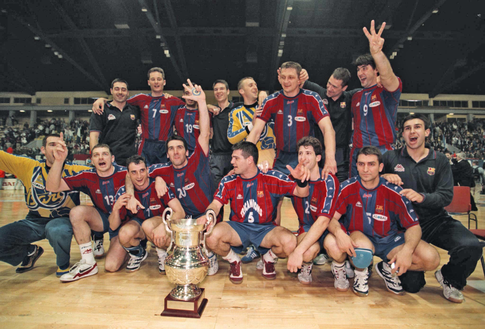
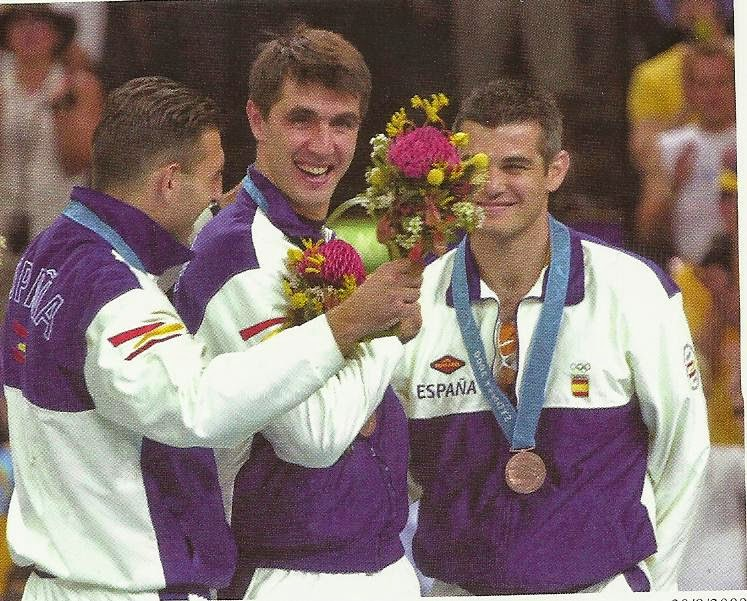

Inicio
Premios Obtenidos

Medalla de plata en el Europeo de España 1996.
Medalla de bronce en el Europeo de Croacia 2000.
Medalla de bronce en los Juegos Olímpicos de Sídney 2000. Júnior
l Liga ASOBAL (7): 1990/91, 1991/92, 1995/96, 1996/97, 1997/98, 1998/99, 1999/2000.
Copa de SM el Rey (5): 1992/93, 1993/94, 1996/97, 1997/98, 1999/2000.
Copa ASOBAL (5): 1994/95, 1995/96, 1999/2000, 2000/01, 2001/02.
Supercopa de España (5): 1990/91, 1991/92, 1993/94, 1996/97, 1997/98.
Internacional Copa de Europa (6): 1990/91, 1995/96, 1996/97, 1997/98, 1998/99, 1999/2000.
Recopa de Europa (2): 1993/94, 1994/95.
Copa EHF (1): 2002/03.
Supercopa de Europa (5): 1996/97, 1997/98, 1998/99, 1999/2000, 2003/04.
Liga de los Pirineos (6): 1997, 1998, 1999, 2000, 2001, 2003.
Distinciones individuales Mejor Lateral Izquierdo de la Liga ASOBAL (1): 2003
Mejor Lateral Izquierdo del Mundial (1): 2003
Medalla de Plata - Real Orden del Mérito Deportivo: 2006
Insignia de Oro y Brillantes de la Real Federación Española de Balonmano: 2009
